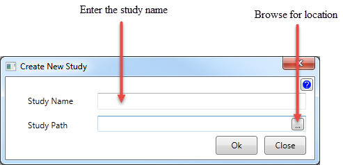
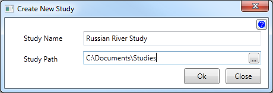
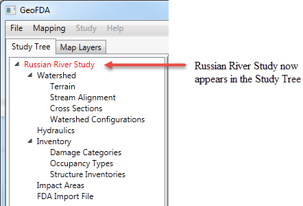
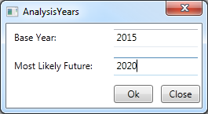

Create New Study
Create a new study by entering the name of the study and selecting the location for the study to reside.

- Enter the name of the new study.
- Enter or browse to the location that the study is to reside.
Example

After clicking the Ok button...

The name of the study will appear in red. This is because you have not selected the Analysis Years for the study.
To do so, right click on the study name and click Analysis Years.

After entering the Base Year (required) and the Most Likely Future (Optional), click Ok and the study name will turn black.